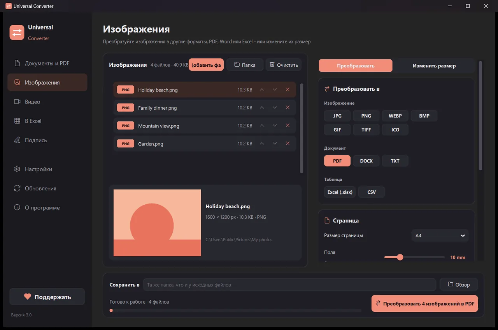
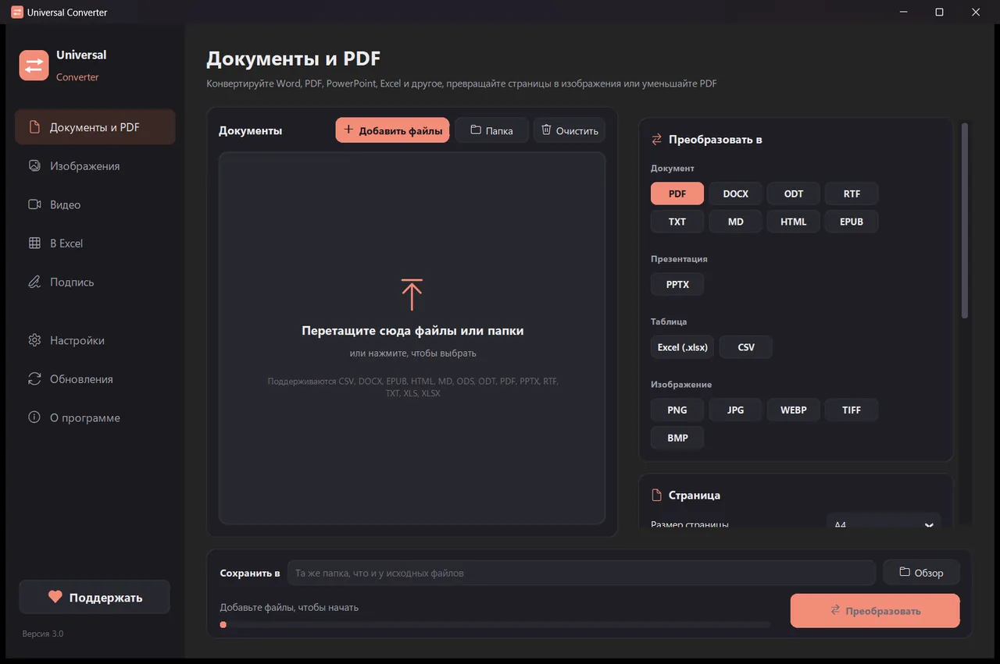
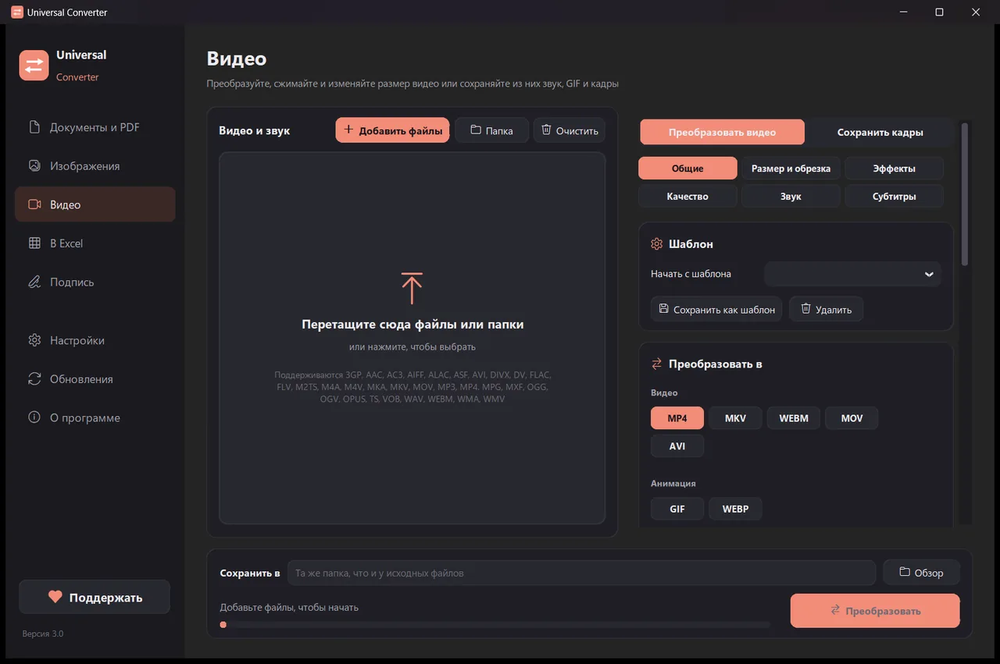
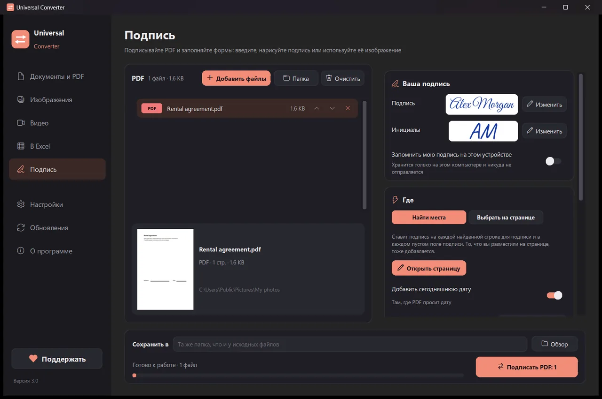

Преобразуйте файлы на своём устройстве
Изображения, документы, видео и звук, PDF и таблицы в Excel - всё в одном приложении. Ничего не загружается: ваши файлы никогда не покидают устройство.
Как установить и обновить
- Откройте скачанный .dmg и перетащите Universal Converter в «Программы».
- Откройте приложение. При первом запуске macOS блокирует его, потому что оно не подписано Apple: нажмите «Готово».
- Откройте Системные настройки > Конфиденциальность и безопасность, прокрутите вниз, нажмите «Всё равно открыть» и введите пароль. Это нужно сделать только один раз.
Обновления: если вы разрешите это при первом запуске, приложение при каждом запуске проверяет новые версии, проверяет их цифровую подпись и устанавливает, когда вы решите.
Как установить и обновить
- Нажмите «Скачать для Android» на телефоне.
- Откройте скачанный файл. Если Android спросит, разрешите браузеру или файловому менеджеру устанавливать приложения.
- Нажмите «Установить».
Обновления: приложение проверяет их примерно раз в день и сообщает, когда готова новая версия. Скачайте её так же и установите поверх старой; настройки сохранятся.

Конфиденциально
Всё работает на вашем устройстве. Никаких загрузок, очередей и ограничений по размеру.
Бесплатно
Бесплатно, без рекламы, регистрации и водяных знаков.
18 языков
Русский, английский, греческий, испанский, итальянский, немецкий, французский, португальский, польский, арабский, иврит, китайский, японский, корейский, тамильский, африкаанс, йоруба и хауса.
Пять инструментов в одном окне

Документы и PDF
Преобразование между PDF, Word, ODT, RTF, TXT, Markdown, HTML, EPUB, PowerPoint и Excel. Страницы в изображения и несколько файлов в один PDF. Шрифты, размеры и цвета сохраняются. Уменьшайте PDF до нужного размера.
Изображения
Преобразование между JPG, PNG, WEBP, TIFF, BMP, GIF и ICO. Изменение размера в пикселях, процентах или по размеру файла, объединение картинок в файл PDF или Word и чтение текста с картинок (OCR). Можно добавлять и PDF: каждая страница становится картинкой.

Видео
Преобразование видео между MP4, MKV, WebM, MOV и AVI и сжатие с AV1, H.265, H.264 или VP9. Обрезка, отрезки, поворот и изменение размера, GIF, сохранение кадров как картинок или только звук в MP3, M4A, FLAC, WAV, OGG или Opus. На Android: MP4, MKV, WebM, MOV или GIF либо только звук в M4A, OGG или WAV; отрезки, обрезка, поворот, размер и сохранение кадров.

В Excel
Перенос таблиц из PDF, сканов и фотографий в Excel или CSV: банковские выписки, счета, прайс-листы. Читает русский, английский, греческий и ещё более 30 языков.

Подпись
Подписывайте PDF и заполняйте формы. Введите имя рукописным стилем, нарисуйте подпись или используйте её фото. Приложение само находит строки для подписи, или вы щёлкаете либо нажимаете там, где должны быть подпись, инициалы, дата, текст или отметки. Подписывайте много файлов сразу; оригиналы остаются нетронутыми.
- По возможности использует видеокарту для видео: обычно в 5-20 раз быстрее.
- Перетащите целые папки: все файлы преобразуются за один раз.
- Подскажет, если файл относится к другой вкладке, и перенесёт его туда одним нажатием.
- Сообщает о новых версиях; на Windows и Mac может установить их сам, с проверкой цифровой подписи.
- Светлое и тёмное оформление, как на вашем устройстве.
Как это работает
- Откройте Universal Converter и выберите слева Документы и PDF · Изображения · Видео · В Excel · Подпись.
- Перетащите в окно файлы или целую папку или нажмите «Добавить файлы».
- Нажмите «Преобразовать». Новые файлы сохраняются рядом с оригиналами или в выбранной вами папке.
Что умеет
- Преобразовать PDF в Word
- Преобразовать документы Word в PDF
- Объединить несколько файлов в один PDF
- Сжать PDF до нужного размера
- Преобразовать страницы PDF в картинки JPG
- Превратить отсканированный документ в редактируемый файл Word
- Преобразование картинок между JPG, PNG, WEBP и другими
- Изменить размер картинок или уменьшить их до размера файла
- Объединить фотографии в один PDF
- Скопировать текст с картинки (OCR)
- Сжать видео без загрузки в сеть
- Преобразование видео между MP4, MKV, WebM, MOV и AVI
- Сохранить звук из видео в MP3
- Сделать GIF из видео
- Перенести таблицы из PDF в Excel
- Преобразовать банковскую выписку из PDF в Excel
- Извлечь таблицы из счетов в PDF в Excel
- Подписать PDF
- Заполнить PDF-форму
Вопросы
Это правда бесплатно?
Да. Universal Converter бесплатен, без рекламы, регистрации и ограничений по времени. Если он вам помогает, вы можете поддержать его развитие добровольным взносом, но это никогда не обязательно.
Мои файлы куда-нибудь загружаются?
Нет. Каждое преобразование выполняется на вашем устройстве, поэтому работает и без интернета. Приложение выходит в сеть только для проверки обновлений, загрузки выбранных вами алфавитов для распознавания текста и, если вы разрешите, отправки анонимных отчётов об ошибках.
Windows показывает предупреждение SmartScreen. Это нормально?
Да. Установщик пока не подписан сертификатом, поэтому Windows его не узнаёт. Нажмите «Подробнее», затем «Выполнить в любом случае». Последующие обновления приложение само проверяет по цифровой подписи. Или установите его из Microsoft Store - там предупреждения нет.
Как открыть его на Mac?
Откройте скачанный файл и перетащите Universal Converter в «Программы». Приложение не подписано Apple, поэтому при первом запуске macOS его блокирует: нажмите «Готово», затем откройте Системные настройки > Конфиденциальность и безопасность, нажмите «Всё равно открыть» и введите пароль. Это нужно сделать только один раз.
Как установить его на Android?
Скачайте APK на телефон, откройте его и разрешите установку, когда система спросит (Android 10 или новее). Все 18 языков встроены; выберите нужный в настройках приложения. Приложение сообщит, когда выйдет новая версия.
На каких языках оно работает?
Приложение доступно на русском, английском, греческом, испанском, итальянском, немецком, французском, португальском, польском, арабском, иврите, китайском, японском, корейском, тамильском, африкаанс, йоруба и хауса. Язык выбирается в установщике или позже в настройках.